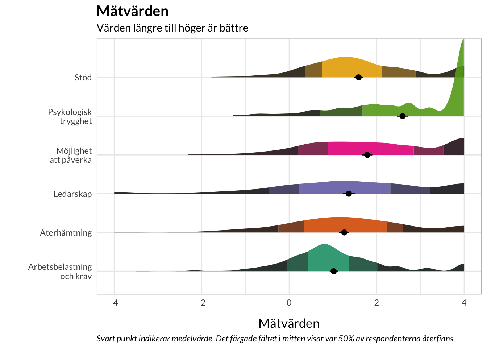

library(readxl)library(RISEkbmRasch) # devtools::install_github("pgmj/RISEkbmRasch")### some commands exist in multiple packages, here we define preferred ones that are frequently usedselect <- dplyr::selectcount <- dplyr::countrecode <- car::recoderename <- dplyr::renameitemlabels <-read_excel("data/Itemlabels.xlsx") %>%rename(Index = Dimension)final.items <-read.csv("01_arborg/finalItems.csv") %>%add_column(Index ="Arbetets organisation")final.items <-read_csv("02_arbkrv/finalItems.csv") %>%add_column(Index ="Arbetetsbelastning och krav") %>%bind_rows(final.items,.)final.items <-read_csv("03_mpvrk/finalItems.csv") %>%add_column(Index ="Möjlighet att påverka") %>%bind_rows(final.items,.)final.items <-read_csv("04_std/finalItems.csv") %>%add_column(Index ="Stöd") %>%bind_rows(final.items,.)final.items <-read_csv("05_rec/finalItems.csv") %>%add_column(Index ="Återhämtning") %>%bind_rows(final.items,.)final.items <-read_csv("06_ldrskp/finalItems.csv") %>%add_column(Index ="Ledarskap") %>%bind_rows(final.items,.)final.items <-read_csv("07_knskputv/finalItems.csv") %>%add_column(Index ="Kunskaper och utveckling") %>%bind_rows(final.items,.)final.items <-read_csv("08_krbet/finalItems.csv") %>%add_column(Index ="Kränkande beteenden") %>%bind_rows(final.items,.)final.items <-read_csv("09_psyktry/finalItems.csv") %>%add_column(Index ="Psykologisk trygghet") %>%bind_rows(final.items,.)
Introduktion
Övergripande målsättningar:
Genomföra psykometriska analyser för att utvärdera i vilken grad enkätfrågorna i dess nuvarande form kan utgöra tillförlitliga mätningar av de olika OSA-områden som de avser att mäta. Resultaten av analyserna användes sedan för att identifiera den kombination av items som fungerade bäst och kunde ligga till grund för beräkning av mätvärden inom ett område/index (“indexvärde”). Dessa mätvärden är betydligt mer tillförlitliga än enskilda frågor och utgör ett bättre underlag för jämförelser över tid eller mellan grupper.
Utforska om nya kombinationer av items från olika områden kunde sättas samman med lika bra eller bättre mätegenskaper. Detta gjordes utifrån både kvalitativa resonemang om vilka items som kunde antas mäta samma underliggande fenomen (oberoende den initiala kategoriseringen) och resultat från en konfirmatorisk faktoranalys (korsladdningar och residualkorrelationer).
Ge förslag på hur data från enkäten kan visualiseras på ett sätt som gör enkätresultaten lättillgängliga och användbara för slutanvändaren. Visualiseringsförslagen gavs både för mätvärden inom ett område (som förutsätter att psykometriska kriterier uppfylls) och för återgivning av svarsfördelningar för enskilda frågor. All visualisering bygger på att resultaten ska presenteras på gruppnivå.
1.1 Svarskategorier
Tre varianter på svarskategorier har använts i enkäten. I förekommande fall har justeringar av svarskategorierna gjorts efter analys, se respektive delskalas fullständiga analys för detaljer.
För området Arbetets organisering användes följande fyra svarsalternativ:
Instämmer helt och hållet
Instämmer till stor del
Instämmer till viss del
Instämmer inte alls
Följande fem svarsalternativ användes för området Kränkande beteenden:
Aldrig
Det har hänt
Varje månad
Varje vecka
Dagligen
För resterande sju områden användes följande sex svarsalternativ:
Alltid
Mycket ofta
Ganska ofta
Ibland
Sällan
Aldrig
1.2 Psykometriska kriterier
RISE har tagit fram fem grundläggande psykometriska kriterier som har varit utgångspunkt för analysarbetet. Artikeln finns fritt tillgänglig som preprint (Johansson et al. 2023) och innehåller både en enklare och mera fördjupad beskrivning av kriterierna.
Nedan finns en förenklad beskrivning av psykometriska kriterier som kommer från RISE rapport till MFoF om uppföljning av föräldraskapsstöd (Preuter, Johansson, and Bokström 2022):
När enkäter konstrueras och utvärderas bedöms dess psykometriska egenskaper, ofta kopplade till begreppen reliabilitet och validitet. Förenklat kan man säga att reliabilitet beskriver hur väl något mäts (vilken precision mätverktyget har), medan validitet beskriver hur väl innehållet i frågorna och svarskategorierna fångar det man avser att mäta. Dock råder i allmänhet oklara definitioner av begreppen och kriterier för huruvida dessa mätegenskaper uppfylls eller inte. Det medför att även enkäter som i forskningsartiklar beskrivs som “validerade” eller att de har “god reliabilitet” inte nödvändigtvis uppfyller vad som kan anses vara grundläggande kriterier. En mera omfattande beskrivning av de grundläggande psykometriska kriterierna återfinns i Bilaga 3 (separat dokument). Nedan listas kriterierna. Var och en av dem kräver psykometrisk analys av insamlade data för att bedöma.
Lista över grundläggande psykometriska kriterier:
Svarskategorierna fungerar som avsett
Frågorna fungerar likadant för olika grupper (kön, ålder, etc)
Unidimensionalitet (utan för starkt korrelerade residualer)
Reliabilitet/mätosäkerheter över skalans omfång är adekvat, sett till användningsområdet
Omvandlingstabell till intervallskala
Kriterierna ovan är ställda för att säkerställa att det är lämpligt att använda summapoäng från en enkät/skala. Summapoängen bör i sin tur användas tillsammans med en omvandlingstabell till intervallskala innan några statistiska eller matematiska beräkningar görs. Tyvärr är det mycket vanligt att forskningsstudier enbart redovisar Cronbach’s alpha som ett mått på reliabilitet och/eller kvalitet på en enkät. Det är dessvärre gravt otillräckligt för att bedöma mätegenskaper hos ett mätverktyg, eftersom Cronbach’s alpha inte ger information om något av kriterierna ovan.
1.3 Noteringar om analysprocessen
Inom varje område har samtliga frågor/items lagts in i en analys. Ambitionen har varit att ta fram ett index med så goda mätegenskaper som möjligt, och att eliminera items som varit problematiska utifrån ovan nämnda psykometriska kriterier.
Rasch-analyser visade att sex av nio områden av organisatorisk och social arbetsmiljö uppfyllde de psykometriska kriterierna i tillräcklig grad och kan användas för att ta fram indexvärden. De sex områden som fungerade godkänt - efter exkludering av items som inte passade mätmodellen enligt ovan nämnda kriterier - var “Arbetsbelastning och krav”, “Möjlighet att påverka”, “Stöd”, “Återhämtning”, “Ledarskap” och “Psykologisk trygghet”. Resterande tre områden visade sig inte fungera lika bra och rekommenderas därför att revideras innan de kan användas för att ta fram indexvärden. Frågor från samtliga områden kan presenteras i form av svarsfördelning på enskilda frågor.
1.4 Noteringar om sammanfattningen av resultat
I denna sammanfattning redovisas både samtliga items inom respektive område, och den sammansättning items som har visat sig fungera bäst utifrån psykometriska kriterierna. Den optimala uppsättningen items är markerade med grönt. För de sex områden som uppvisade tillräckligt god psykometrisk kvalitet länkas också till information om reliabilitet och “targeting” (hur väl frågorna matchar respondenterna), eftersom dessa faktorer är relevanta för användningen av frågorna.
Ett vanligt problem i analyserna har varit residualkorrelationer. Det innebär att par av items är för lika varandra och inte enskilt medför tillräckligt mycket unik information till indexvärdet. I stället finns risk för att indexvärden skulle bli oproportionerligt påverkade om båda items behålls i indexet. I regel tas ett item bort, utifrån beaktande av varje items mätegenskaper.
Komplett dokumentation av psykometriska analyser för respektive indexområde finns tillgängligt i menyn till vänster på denna sida. Den kompletta källkoden som visar hur analyserna gjorts finns fritt tillgänglig på GitHub. Eftersom även anonyma rådata tillgängliggjorts är det möjligt att granska och reproducera våra analyser. All mjukvara som använts för analyserna bygger på öppen källkod och är fritt tillgängliga.
1.5 Arbetets organisering
1.5.1 Items
Code
arborg.nr <- itemlabels %>%filter(str_detect(itemnr,"^ao")) %>%# byt ut abk mot önskvärd indexförkortningrownames_to_column() %>%filter(itemnr %in%c(final.items %>%filter(str_detect(itemnr,"^ao")) %>%# byt ut abk mot önskvärd indexförkortningpull(itemnr)) )%>%pull(rowname) %>%as.numeric()itemlabels %>%filter(str_detect(itemnr,"^ao")) %>%# byt ut abk mot önskvärd indexförkortningselect(!Index) %>%kbl_rise() %>%row_spec(arborg.nr, background ="#008332", color ="white")
itemnr
item
ao1
Jag vet vilka arbetsuppgifter jag har.
ao2
Jag vet hur mitt arbete ska utföras.
ao3
Jag vet vilka resultat som jag ska uppnå med mitt arbete.
ao4
Det finns tydliga mål för min arbetsgrupp.
ao5
Det finns tydliga mål för min organisation.
1.5.2 Svarskategorier
Instämmer helt och hållet
Instämmer till stor del
Instämmer till viss del
Instämmer inte alls
1.6 Arbetsbelastning och krav
1.6.1 Items
Code
arbkrv.nr <- itemlabels %>%filter(str_detect(itemnr,"^abk")) %>%# byt ut abk mot önskvärd indexförkortningrownames_to_column() %>%filter(itemnr %in%c(final.items %>%filter(str_detect(itemnr,"^abk")) %>%# byt ut abk mot önskvärd indexförkortningpull(itemnr)) )%>%pull(rowname) %>%as.numeric()itemlabels %>%filter(str_detect(itemnr,"^abk")) %>%# byt ut abk mot önskvärd indexförkortningselect(!Index) %>%kbl_rise() %>%row_spec(arbkrv.nr, background ="#008332", color ="white")
itemnr
item
abk1
Min arbetsbelastning är rimlig.
abk2
Jag hinner med mina arbetsuppgifter inom min arbetstid.
abk3
Mitt arbete är lagom omväxlande.
abk4
Jag upplever att andras krav på mig är rimliga.
abk5
Jag kan få hjälp om min arbetsbelastning är för hög.
abk6
Mitt arbete är fritt från psykiskt påfrestande arbetsuppgifter.
Se Figur 10.1 för matchning mellan respondenter och items.
1.14 Explorativa analyser
För att undersöka om kombinationer av items från olika arbetsmiljöområden förbättrade den psykometriska kvaliteten genomfördes även explorativa analyser. Till att börja med testades en sammanfogning av områdena “Arbetsbelastning och krav” och “Återhämtning”. Följande kombinationer av items visade sig fungera tillsammans:
Jag upplever att andras krav på mig är rimliga. (arbetsbelastning och krav)
Jag kan få hjälp om min arbetsbelastning är för hög. (arbetsbelastning och krav)
Mitt arbete är fritt från psykiskt påfrestande arbetsuppgifter. (arbetsbelastning och krav)
Jag har möjlighet att arbeta i lugnare takt efter arbetsintensiva perioder. (återhämtning)
Jag har ork kvar för att göra andra saker efter arbetsdagens slut. (återhämtning)
Jag kan lägga tankar på arbetet åt sidan på min lediga tid. (återhämtning)
Dessa items är tillsynes tematiskt lika och skulle kunna passa under begreppet ’Arbetsbelastning’.
En ytterligare explorativ analys gjordes genom att slå ihop områdena “Psykologisk trygghet”, “Stöd” och “Möjlighet att påverka”. Följande kombinationer av items visade sig fungera bra tillsammans:
Jag har tillräckligt med befogenheter för att kunna utföra mina arbetsuppgifter. (möjlighet att påverka)
Jag vet vem jag ska vända mig till för att få stöd och hjälp med att utföra arbetet. (stöd)
Det finns personer på mitt arbete som jag kan prata förtroligt med. (stöd)
Mina kollegor visar uppskattning för mina arbetsinsatser. (stöd)
Jag kan begå misstag utan att det hålls emot mig. (psykologisk trygghet)
Jag kan öppet diskutera olika typer av svårigheter. (psykologisk trygghet)
Jag blir inkluderad även om jag tycker annorlunda. (psykologisk trygghet)
Dessa items skulle potentiellt kunna rymmas inom begreppet ’Psykologisk trygghet’.
1.15 Visualisering
1.15.1 Fördelning av övergripande mätvärden
Uppdelat per område/index där det varit möjligt att estimera mätvärden.
Code
df.scores <-read.csv("02_arbkrv/scored.csv") %>%select(score) %>%rename(`Arbetsbelastning och krav`= score) %>%add_column(id =seq_along(1:nrow(.)))df.scores <-read.csv("03_mpvrk/scored.csv") %>%select(score) %>%rename(`Möjlighet att påverka`= score) %>%add_column(id =seq_along(1:nrow(.))) %>%full_join(df.scores, by ="id")df.scores <-read.csv("04_std/scored.csv") %>%select(score) %>%rename(Stöd = score) %>%add_column(id =seq_along(1:nrow(.))) %>%full_join(df.scores, by ="id")df.scores <-read.csv("05_rec/scored.csv") %>%select(score) %>%rename(Återhämtning = score) %>%add_column(id =seq_along(1:nrow(.))) %>%full_join(df.scores, by ="id")df.scores <-read.csv("06_ldrskp/scored.csv") %>%select(score) %>%rename(Ledarskap = score) %>%add_column(id =seq_along(1:nrow(.))) %>%full_join(df.scores, by ="id")df.scores <-read.csv("09_psyktry/scored.csv") %>%select(score) %>%rename(`Psykologisk trygghet`= score) %>%add_column(id =seq_along(1:nrow(.))) %>%full_join(df.scores, by ="id")df.scores$id <-NULL
Code
library(skimr)skim(df.scores)
Data summary
Name
df.scores
Number of rows
511
Number of columns
6
_______________________
Column type frequency:
numeric
6
________________________
Group variables
None
Variable type: numeric
skim_variable
n_missing
complete_rate
mean
sd
p0
p25
p50
p75
p100
hist
Psykologisk trygghet
42
0.92
2.54
1.38
-1.29
1.68
2.74
4.00
4
▁▂▃▅▇
Ledarskap
34
0.93
1.31
1.61
-4.00
0.21
1.28
2.31
4
▁▁▅▇▅
Återhämtning
23
0.95
1.21
1.37
-4.00
0.34
1.09
2.23
4
▁▁▅▇▃
Stöd
25
0.95
1.54
1.16
-1.78
0.75
1.34
2.11
4
▁▂▇▅▃
Möjlighet att påverka
9
0.98
1.73
1.38
-2.32
0.89
1.71
2.84
4
▁▃▇▇▇
Arbetsbelastning och krav
0
1.00
0.97
1.07
-3.50
0.43
0.89
1.37
4
▁▁▇▆▁
Code
# #| fig-height: 6library(ggpp)library(ggdist)library(stringr)df.scores %>%pivot_longer(everything()) %>%rename(item = name,score = value) %>%ggplot(data = .,aes(x = score, y = item, group = item, fill = item) ) +stat_slab(side ="right", show.legend = F,scale =2, # defines the height that a slab can reachalpha =0.9,#position = position_dodge(width = .6), # distance between elements for dodgingaes(fill_ramp =after_stat(level), fill = item),.width =c(.50, .75, 1) ) +scale_fill_ramp_discrete(from ="black", aesthetics ="fill_ramp") +stat_summary(fun.data ="mean_cl_boot",show.legend = F, size = .4,position =position_dodge2nudge(x=.05,width = .8)) +scale_y_discrete(labels =~ stringr::str_wrap(.x, width =12)) +theme_minimal() +theme_rise() +coord_cartesian(xlim =c(-4,4)) +scale_fill_brewer(palette ="Dark2",guide ="none") +labs(title ="Mätvärden",subtitle ="Värden längre till höger är bättre",caption ="Svart punkt indikerar medelvärde. Det färgade fältet i mitten visar var 50% av respondenterna återfinns.",y ="",x ="Mätvärden" )

1.16 Referenser
Johansson, Magnus, Marit Preuter, Simon Karlsson, Marie-Louise Möllerberg, Hanna Svensson, and Jeanette Melin. 2023. “Valid and Reliable? Basic and Expanded Recommendations for Psychometric Reporting and Quality Assessment.”https://doi.org/10.31219/osf.io/3htzc.
Preuter, Marit, Magnus Johansson, and Tomas Bokström. 2022. Strukturer och indikatorer för uppföljning av föräldraskapsstöd. RISE rapport 2022:70. RISE Research Institutes of Sweden. http://urn.kb.se/resolve?urn=urn:nbn:se:ri:diva-59978.
1.8 Socialt stöd
1.8.1 Items
Code
1.8.2 Svarskategorier
1.8.3 Reliabilitet
Se Figur 5.2 för områdets reliabilitet.
1.8.4 Targeting
Se Figur 5.1 för matchning mellan respondenter och items.